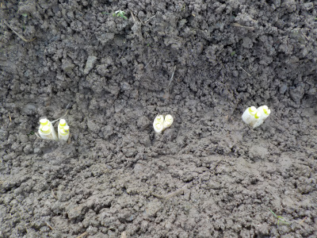
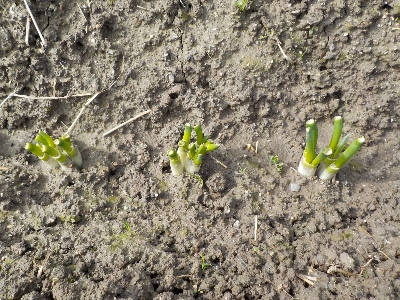
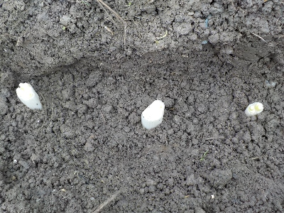
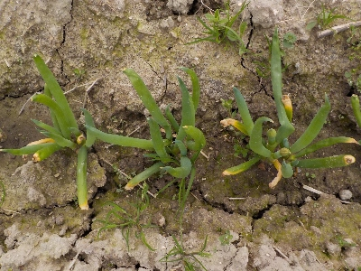
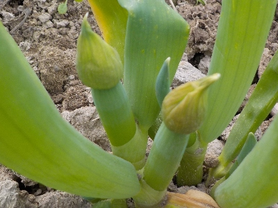
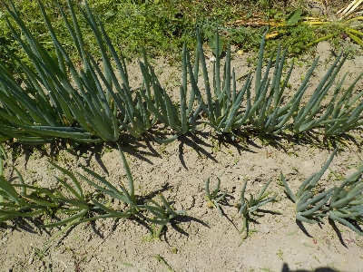
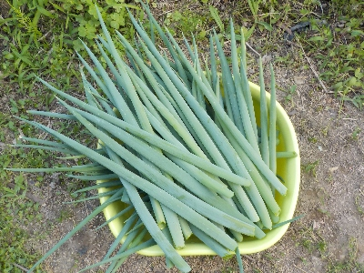
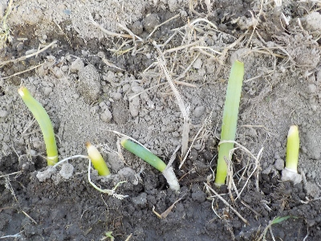

食べた長ネギの株元を植えました。
更新日 : 2024/02/11

食べた長ネギの株元を畑に植えました。どうなるんでしょうね。
ネギ坊主が出たら取って育て続けるつもりですが、食べるサイズまで育つかな？
これからこの場所でずっと育てるとしたら、長期間場所を使っちゃいますね。なんか効率が悪そうな気がします。
更新日 : 2024/02/11

食べた長ネギの株元を畑に植えました。どうなるんでしょうね。
ネギ坊主が出たら取って育て続けるつもりですが、食べるサイズまで育つかな？
これからこの場所でずっと育てるとしたら、長期間場所を使っちゃいますね。なんか効率が悪そうな気がします。
更新日 : 2024/02/25

地面に植えたネギがちょっと成長しました。
植えた時は1本とか2本のネギでしたが、分裂して小さいネギが沢山出来そうです。
順調に育てば大増殖です。
更新日 : 2024/03/03

後何本植えれるかな？。実験的にやっているので、もう追加はしない方がいいかも。
更新日 : 2024/03/30

すくすく大きく成長してます。もう葉ネギとして食べれそうです。

でも春なのでネギ坊主が出来そうです。
今日はネギ坊主取りと土寄せをしました。
更新日 : 2024/05/25

ネギ坊主を見つけたらこまめに取り除いていますが、この頃か数か減りました。
もうネギ坊主の季節じゃなくなったんだな。季節が変わっていくな。
更新日 : 2024/06/01

ネギの葉が伸びて、重みで倒れるようになったので収穫しました。
ハサミで切ったんですが、スパッと音をたてて切れて気持ち良かったです。
新玉ねぎの時期なので、今はネギ系が食べ放題になりました。
更新日 : 2025/04/26

ネギを食べたら根っこの部分を植えています。ネギのタネや苗を買わないので経済的ですね。
でも1年中どこかでネギが植わっています。連作にならないように場所も変えるので、収穫用と植え替え用のスペースが必要になります。
1年中成長しているわけでもないので、なにげに効率が悪い気がする。冬以外はコンパニオンプランツとしてあちこちの野菜の隙間に植えるくらいがいいかな。
長ネギですが、刻んで冷凍保存して使っています。